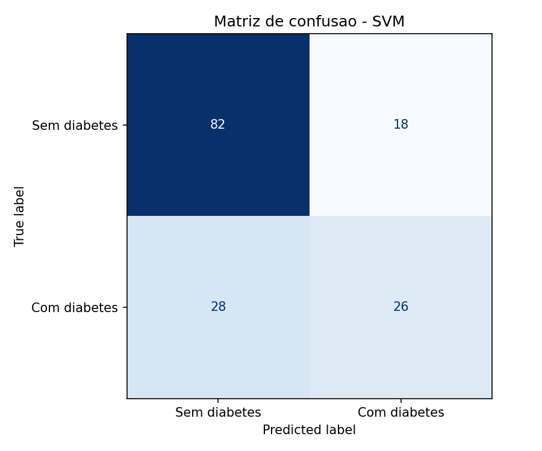
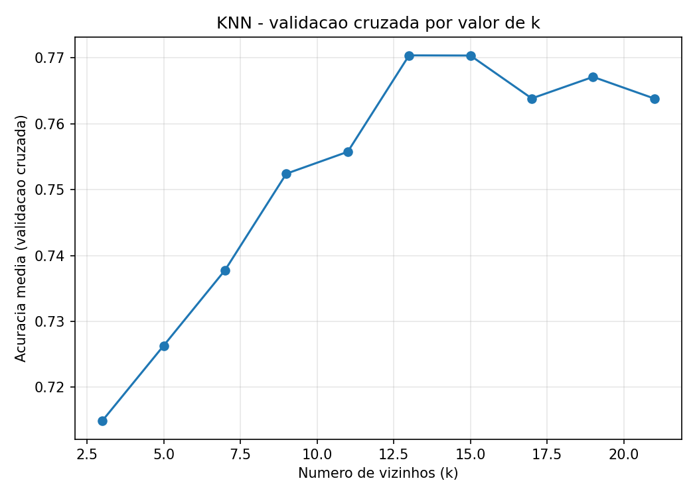
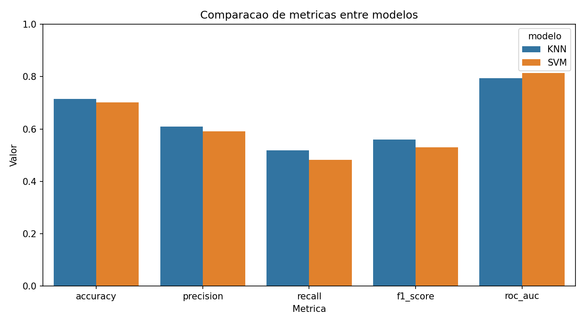
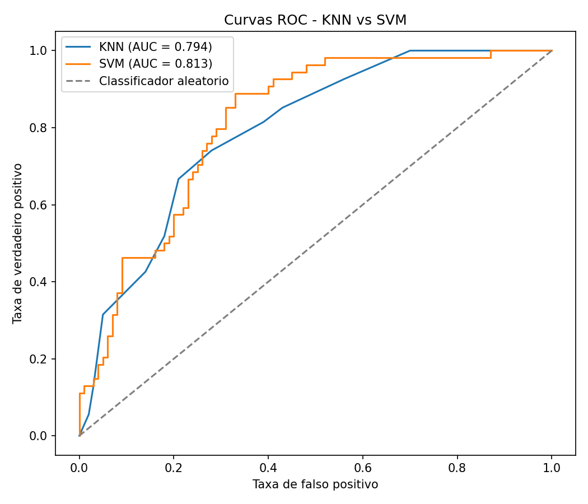

Disciplina de Inteligência Artificial , Professor Munif , Unicesumar 2026
O diabetes mellitus é uma doença crônica que afeta milhões de pessoas no mundo. A detecção precoce é fundamental para reduzir complicações e melhorar a qualidade de vida dos pacientes. Com o avanço da Inteligência Artificial, modelos de aprendizado de máquina podem apoiar a identificação de padrões em dados clínicos e auxiliar profissionais de saúde na triagem de risco.
Este trabalho investiga se é possível prever a presença de diabetes em pacientes da etnia Pima Indians com base em variáveis clínicas e demográficas, como glicose, pressão arterial, IMC e idade.
Modelos de classificação supervisionada conseguem distinguir pacientes com e sem diabetes a partir dos atributos disponíveis. Espera-se que o SVM apresente bom desempenho após a padronização dos dados, enquanto o KNN pode ser sensível à escolha do número de vizinhos e à distribuição das classes.
| Item | Descrição |
|---|---|
| Nome | Pima Indians Diabetes Database |
| Origem | Kaggle / UCI Machine Learning Repository |
| Registros | 768 amostras |
| Atributos | 8 variáveis numéricas |
| Variável alvo | Outcome (0 = sem diabetes, 1 = com diabetes) |
Atributos: Pregnancies, Glucose, BloodPressure, SkinThickness, Insulin, BMI, DiabetesPedigreeFunction e Age.
| Parte | Algoritmo | Detalhes |
|---|---|---|
| Parte 1 | KNN | k-Nearest Neighbors, melhor k = 13 |
| Parte 2 | SVM | kernel linear, C = 1, gamma = scale |
Ambos os modelos foram treinados com validação cruzada estratificada (5 folds).
Métricas: acurácia, precisão, revocação, F1-score e ROC-AUC.
| Modelo | Acurácia | Precisão | Revocação | F1 | ROC-AUC |
|---|---|---|---|---|---|
| KNN (k=13) | 71,4% | 60,9% | 51,9% | 0,56 | 0,79 |
| SVM (linear) | 70,1% | 59,1% | 48,1% | 0,53 | 0,81 |
Execute python main.py antes de gerar o PDF para exibir os gráficos.
Matriz de confusão - KNN
Matriz de confusão - SVM

Busca do melhor k no KNN

Comparação de métricas

Curvas ROC

O modelo com melhor desempenho geral foi o KNN, considerando F1-score (0,56 vs 0,53) e acurácia (71,4% vs 70,1%). O SVM apresentou ROC-AUC ligeiramente superior (0,81 vs 0,79).
O KNN obteve melhor revocação; o SVM teve desempenho equilibrado com kernel linear (C=1).
O projeto demonstra o fluxo completo de uma solução de IA: definição do problema, preparação dos dados, treinamento, avaliação e comparação entre modelos. Ambos os algoritmos classificam diabetes com desempenho razoável, com leve vantagem do KNN nas métricas principais. Limitações: dataset pequeno e desbalanceamento de classes.